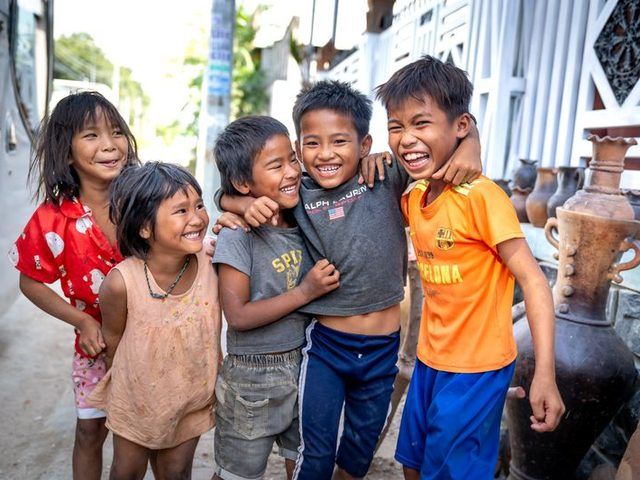
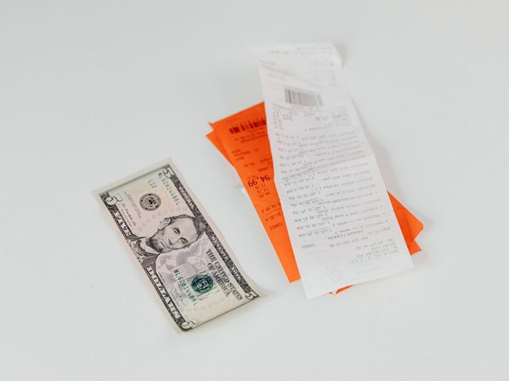
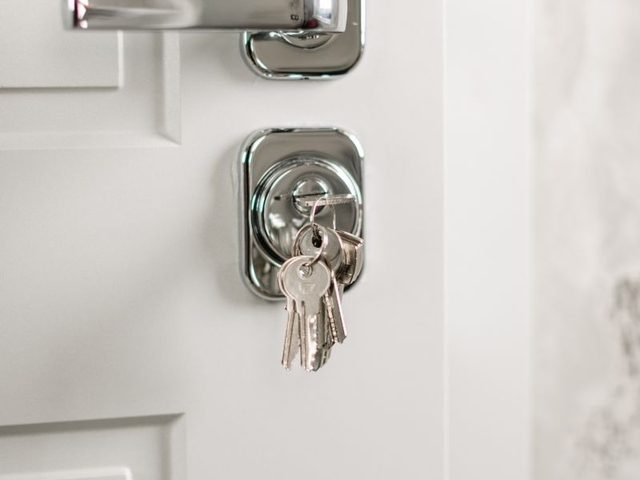
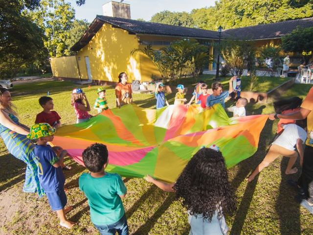
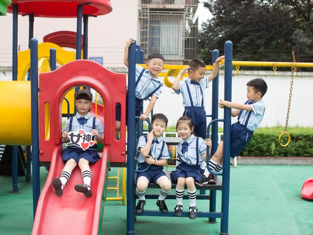
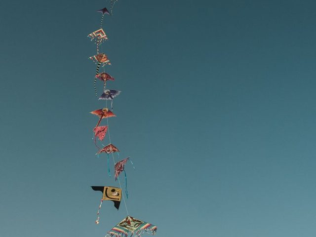
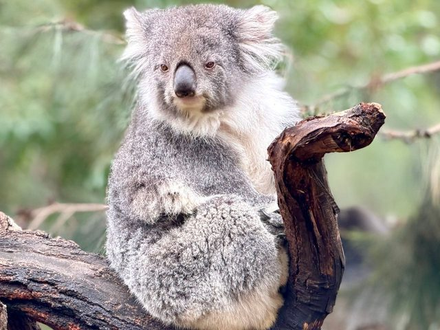

UNIT 26 · VOCABULARY
J、K 開頭
J+K
49 個單字聽・唸・用
本單元單字一覽
WORD UP「J+K」的 49 個字（jacket 到 KTV）。紅色＝要複習，藍色標籤＝WORD UP 標熟記、還要在這裡考對。
jacketjamJanuaryJapanJapanesejazzjealousjeansjeepjobjogjoinjointjokejournalistjoyjudgejuiceJulyjumpJunejustkangarooKaohsiungkeepketchupkeykickkidkillkilogramkilometerkindkindergartenkingkingdomkisskitchenkitekittenkneeknifeknockknowknowledgekoalaKoreaKoreanKTV
每個字都有 🔊，先聽發音、跟著唸，再看例句。
單字 1–4

jacket
夾克；外套n.
Take a jacket with you.
帶件外套吧。
帶件外套吧。

jam
果醬；塞車n.
I like strawberry jam on bread.
我喜歡在麵包上塗草莓醬。
我喜歡在麵包上塗草莓醬。
🗓️
January
一月n.
January is the first month of the year.
一月是一年的第一個月。
一月是一年的第一個月。

Japan
日本n.
We visited Tokyo, Japan.
我們去了日本東京。
我們去了日本東京。
單字 5–8

Japanese
日本的；日本人；日文adj./n.
I can speak a little Japanese.
我會說一點日文。
我會說一點日文。

jazz
爵士樂n.
Dad enjoys listening to jazz.
爸爸喜歡聽爵士樂。
爸爸喜歡聽爵士樂。

jealous
忌妒的adj.
Don't be jealous of others.
不要忌妒別人。
不要忌妒別人。

jeans
牛仔褲n.
I bought a pair of jeans.
我買了一條牛仔褲。
我買了一條牛仔褲。
單字 9–12

jeep
吉普車n.
They drove a jeep up the mountain.
他們開吉普車上山。
他們開吉普車上山。

job
工作n.
Good job! You did it!
做得好！你成功了！
做得好！你成功了！
jog
慢跑v.
I go jogging in the park every morning.
我每天早上去公園慢跑。
我每天早上去公園慢跑。
🤝
join
參加；加入v.
Do you want to join us?
你要加入我們嗎？
你要加入我們嗎？
單字 13–16

joint
關節；共同的n./adj.
My knee joint hurts.
我的膝關節會痛。
我的膝關節會痛。

joke
笑話；開玩笑n./v.
He told a funny joke.
他講了一個好笑的笑話。
他講了一個好笑的笑話。
journalist
記者n.
The journalist asked many questions.
那位記者問了很多問題。
那位記者問了很多問題。

joy
歡樂；喜悅n.
The children jumped for joy.
孩子們高興得跳起來。
孩子們高興得跳起來。
單字 17–20

judge
法官；裁判；判斷n./v.
The judge listened carefully.
法官仔細地聽。
法官仔細地聽。

juice
果汁n.
Would you like some orange juice?
你要喝柳橙汁嗎？
你要喝柳橙汁嗎？
🏖️
July
七月n.
Summer vacation starts in July.
暑假在七月開始。
暑假在七月開始。

jump
跳v.
The cat jumped onto the table.
貓跳到桌上。
貓跳到桌上。
單字 21–24

June
六月n.
We graduate in June.
我們六月畢業。
我們六月畢業。

just
剛剛；只是；正好adv.
I just finished my homework.
我剛寫完功課。
我剛寫完功課。

kangaroo
袋鼠n.
A kangaroo carries its baby in a pouch.
袋鼠把寶寶放在育兒袋裡。
袋鼠把寶寶放在育兒袋裡。

Kaohsiung
高雄n.
Kaohsiung is a big port city.
高雄是個大港市。
高雄是個大港市。
單字 25–28

keep
保持；保留；持續v.
Keep going! Don't stop.
繼續加油！不要停。
繼續加油！不要停。

ketchup
番茄醬n.
I put ketchup on my fries.
我在薯條上加番茄醬。
我在薯條上加番茄醬。

key
鑰匙；關鍵n.
I lost my house key.
我弄丟了家裡的鑰匙。
我弄丟了家裡的鑰匙。
kick
踢v.
He kicked the ball into the goal.
他把球踢進球門。
他把球踢進球門。
單字 29–32

kid
小孩；開玩笑n./v.
Just kidding!
開玩笑的啦！
開玩笑的啦！
☠️
kill
殺死v.
Smoking can kill you.
抽菸會要了你的命。
抽菸會要了你的命。

kilogram
公斤n.
This bag weighs five kilograms.
這個袋子重五公斤。
這個袋子重五公斤。

kilometer
公里n.
The station is two kilometers away.
車站在兩公里外。
車站在兩公里外。
單字 33–36
kind
仁慈的；種類adj./n.
It's kind of you to help me.
你人真好，願意幫我。
你人真好，願意幫我。

kindergarten
幼稚園n.
My little brother goes to kindergarten.
我弟弟讀幼稚園。
我弟弟讀幼稚園。
king
國王n.
The king lived in a big castle.
國王住在大城堡裡。
國王住在大城堡裡。

kingdom
王國n.
The United Kingdom is in Europe.
英國在歐洲。
英國在歐洲。
單字 37–40
kiss
親吻v./n.
Mom kissed me good night.
媽媽親我道晚安。
媽媽親我道晚安。

kitchen
廚房n.
Dad is cooking in the kitchen.
爸爸在廚房煮飯。
爸爸在廚房煮飯。

kite
風箏n.
Let's fly a kite on the beach.
我們在海邊放風箏吧。
我們在海邊放風箏吧。

kitten
小貓n.
The kitten is playing with a ball.
小貓在玩球。
小貓在玩球。
單字 41–44

knee
膝蓋n.
I fell and hurt my knee.
我跌倒傷到膝蓋。
我跌倒傷到膝蓋。

knife
刀子n.
Be careful with the knife.
用刀子要小心。
用刀子要小心。

knock
敲v./n.
Please knock before you come in.
進來前請敲門。
進來前請敲門。
🧠
know
知道；認識v.
Do you know her name?
你知道她的名字嗎？
你知道她的名字嗎？
單字 45–48
📚
knowledge
知識n.
Reading gives us knowledge.
閱讀帶給我們知識。
閱讀帶給我們知識。

koala
無尾熊n.
Koalas sleep most of the day.
無尾熊一天大部分時間都在睡覺。
無尾熊一天大部分時間都在睡覺。
Korea
韓國n.
Many tourists go to Korea for shopping.
很多觀光客去韓國購物。
很多觀光客去韓國購物。

Korean
韓國的；韓國人；韓文adj./n.
I love Korean food.
我很愛韓國料理。
我很愛韓國料理。
單字 49–49

KTV
KTV；卡拉 OKn.
We sang songs at KTV.
我們去 KTV 唱歌。
我們去 KTV 唱歌。
重點整理
| 說法 | 中文 | 例子 |
|---|---|---|
| keep + V-ing | 一直做… | keep talking |
| be kind to + 人 | 對某人好 | Be kind to animals. |
| a kind of | 一種… | a kind of fruit |
| be jealous of | 忌妒… | jealous of her |
| join + 團體 / take part in + 活動 | 加入 ／ 參加 | join the club |
| knee / knife / knock / know | kn 開頭 k 不發音 | knife → knives |
| Just kidding. | 開玩笑的 | Just kidding! |
jeans 一定用複數：My jeans are blue.
快問快答：中文 → 英文
1夾克；外套jacket
2日本Japan
3忌妒的jealous
4工作job
5關節；共同的joint
6歡樂；喜悅joy
7七月July
8剛剛；只是；正好just
快問快答：英文 → 中文
1keep保持；保留；持續
2kick踢
3kilogram公斤
4kindergarten幼稚園
5kiss親吻
6kitten小貓
7knock敲
8koala無尾熊
學完了！接下來
複習方法
review
- 回到「📗 單字卡」，按「遮中文」自己考自己
- 再按「遮英文」，看中文說出英文
- 每個例句跟著 🔊 唸一次
準備好了
- 按右上角「📝 前往測驗」
- 測驗錯的題目要訂正到全對
- 訂正完成補送 1 點